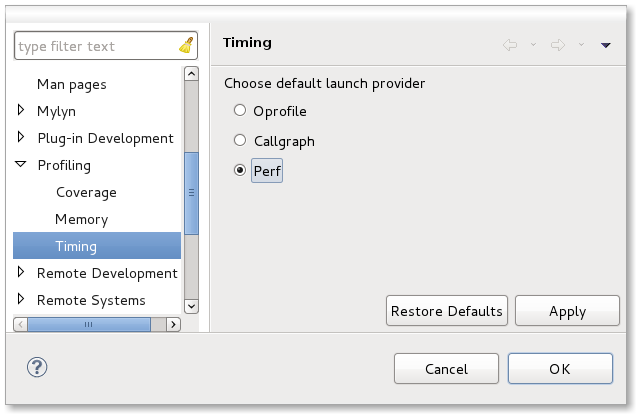
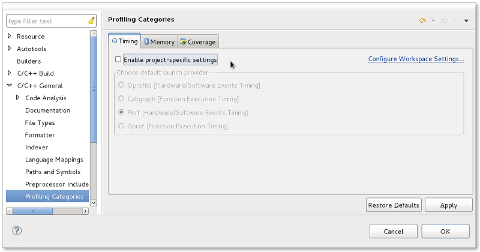

| Profiling Categories | ||
|---|---|---|
|
|
|
|
| Profiling Framework User Guide | Profiling Configurations | |
In the past, some of the Linux Tools profiling plug-ins, such as Valgrind, would add a default launch short-cut. The launch short-cut would use a set of default parameters for the profiling tool and would launch the selected executable appropriately. In the case of Valgrind, which supports multiple tools, the short-cut would default one particular tool to use (in Valgrind's case, this is the memcheck tool which checks for memory leaks). In the Eclipse Debug Launch framework, each launch short-cut can specify which mode or modes it applies to (run, debug, and profile). For those short-cuts that specify the profile mode, this results in an added menu entry under the Profile as... context menu. For example, there are short-cuts for Perf, OProfile, and Valgrind which show up as Profile With Perf, Profile With OProfile, and Profile With Valgrind, respectively.
This can be confusing to end-users who are not familiar with the various tools that are out there and what they can do. For example, both OProfile and Perf provide timing results for an application so there is overlap of functionality within the various tools. To alleviate this, the current profiling tools have been grouped into task categories. By default, there are three initial categories:
For details on using the tools mentioned above, see the appropriate User's Guide for the tool installed from the Linux Tools update site.
The Profiling Category framework is extensible and additional tools such as third-party profiling tools can be added to any of the basic three categories or a new category can be created if needed (e.g. other).
Each category contributes a launch short-cut which results in a menu item under the Profile as... context menu so that an end-user may select to get a timing profile or profile memory usage for a given C/C++ executable. To determine which profiling tool is used from a category short-cut, each tool in a category gives itself a priority so that when multiple tools are installed from the same category, the one with the highest priority becomes the initial default. For example, the Perf tool has the highest priority of the profile timing category tools and so becomes the initial default, if installed. Valgrind memcheck has the highest priority for profiling memory and Gcov is the default for profiling code coverage (at present the only tool in the category).
The default for any category can be directly set/modified by the end-user via Window -> Preferences -> C/C++ -> Profiling Categories. Each category of installed tools using the framework will present a sub-page beneath the top-level Profiling Categories page. The preferences page for each category will display a radio button to represent each tool that is installed that belongs to that particular profiling category. If no tools are installed for a given category, no preferences page is displayed. If the user has not set a preferred tool for a category, the priority of each installed tool will determine the default choice. For example, Perf, if installed, is the highest priority Timing Category profile tool from Linux Tools.
The following shows the Profiling Categories preference for the Timing Category whereby the Linux Tools Perf, OProfile, and Callgraph plug-ins are installed. Note the Perf tool being the default: 
Also note that there is additional information presented as to how the tool functions (e.g. Function Timing vs Hardware Events Timing) and that there are special usage notes via tooltips (e.g. see diagram for notes on using gprof).
For projects that want to set a different category default than the workspace, the same settings are available via the Project Properties page. Like the preferences pages, tooltip information is provided. The Profiling Categories property settings can be found under Project -> Properties -> C/C++ General. Each category allows the end-user to specify project-specific settings or to default to use the workspace preferences instead. In the case where project-specific settings are not enabled, the selection of a profiling tool is disabled. The page also includes a link to the associated workspace Profiling Category preferences for that category should the end-user wish to set them that way or verify what is currently in place. When project-specific settings are chosen, they will override the workspace preferences for that particular category when profiling within that project.

|
|

|
|
| Profiling Framework User Guide | Profiling Configurations |